Proxmox Server Lab
Project virtualisasi server menggunakan Proxmox VE untuk membangun environment server berbasis Linux, Web Server, Database Server, dan Moodle.
Project Overview
Tujuan
Membangun environment server virtual menggunakan Proxmox VE dan melakukan deployment layanan server hingga Moodle dapat digunakan.
Teknologi
- Proxmox VE
- Virtual Machine
- Linux Server
- Web Server
- Database Server
- Moodle
Server Architecture
Environment virtual server digunakan untuk memisahkan kebutuhan Web Server dan Database Server sebelum aplikasi Moodle dijalankan.
Web Server
Server yang digunakan untuk menjalankan layanan web dan aplikasi Moodle.
Database Server
Server yang menyediakan database untuk kebutuhan aplikasi Moodle.
Web Server IP
Dokumentasi konfigurasi alamat IP pada Web Server.
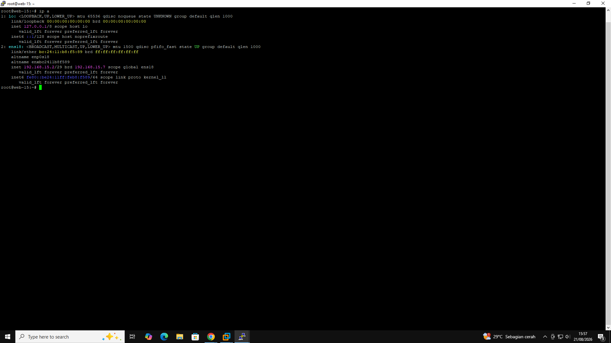
Database Server IP
Dokumentasi konfigurasi alamat IP pada Database Server.
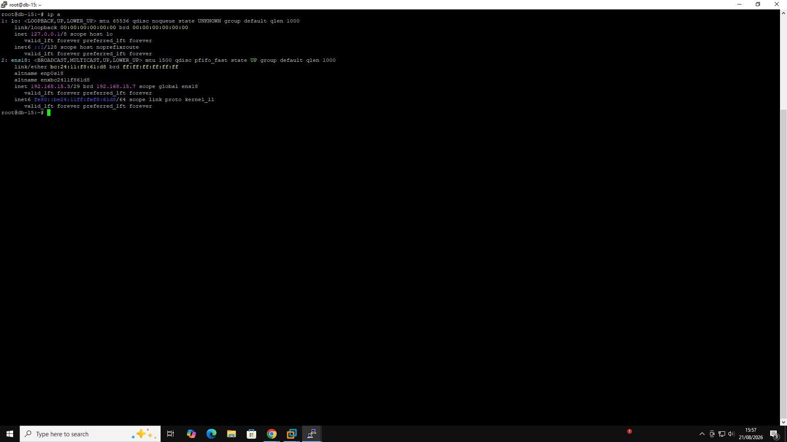
Moodle Directory
Dokumentasi struktur direktori Moodle pada server.
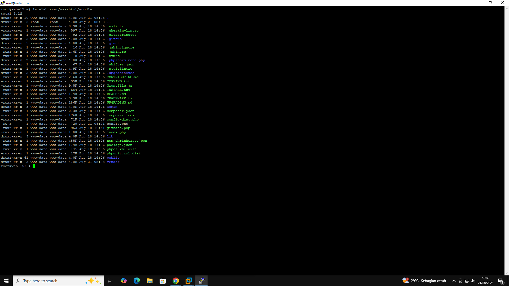
Moodle Configuration
Dokumentasi konfigurasi aplikasi Moodle.
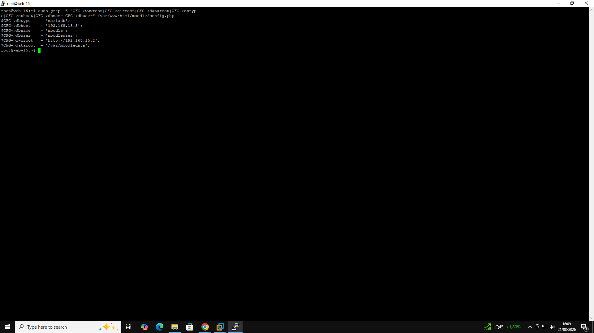
Moodle Database Configuration
Dokumentasi konfigurasi database untuk Moodle.
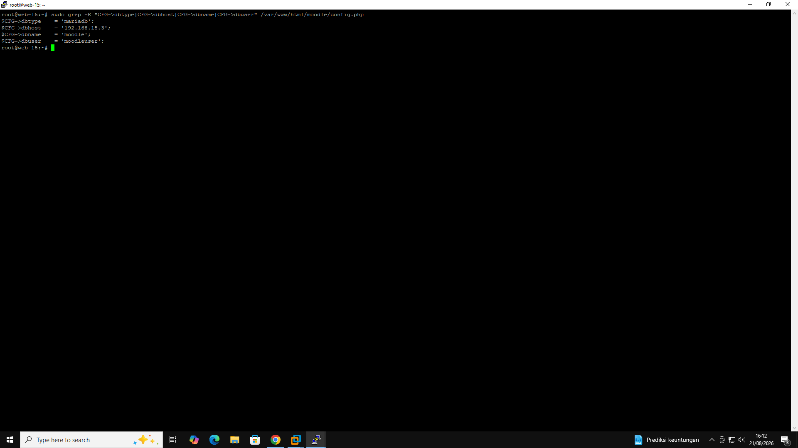
Composer Dependencies
Dokumentasi dependency yang digunakan dalam environment aplikasi Moodle.
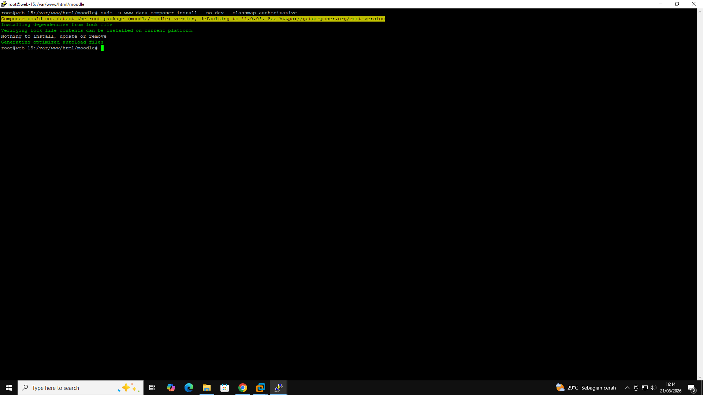
Moodle Cron
Dokumentasi konfigurasi Moodle Cron untuk menjalankan proses otomatis Moodle.
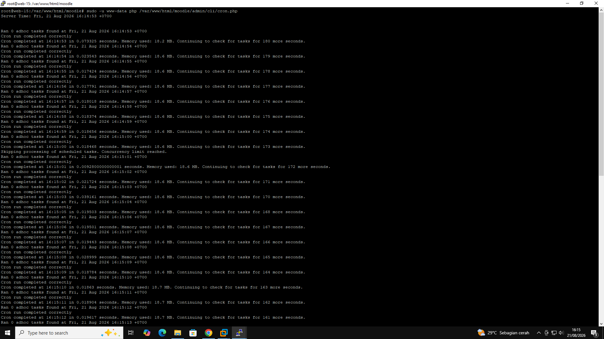
Cron Service
Dokumentasi service Cron pada Linux Server.
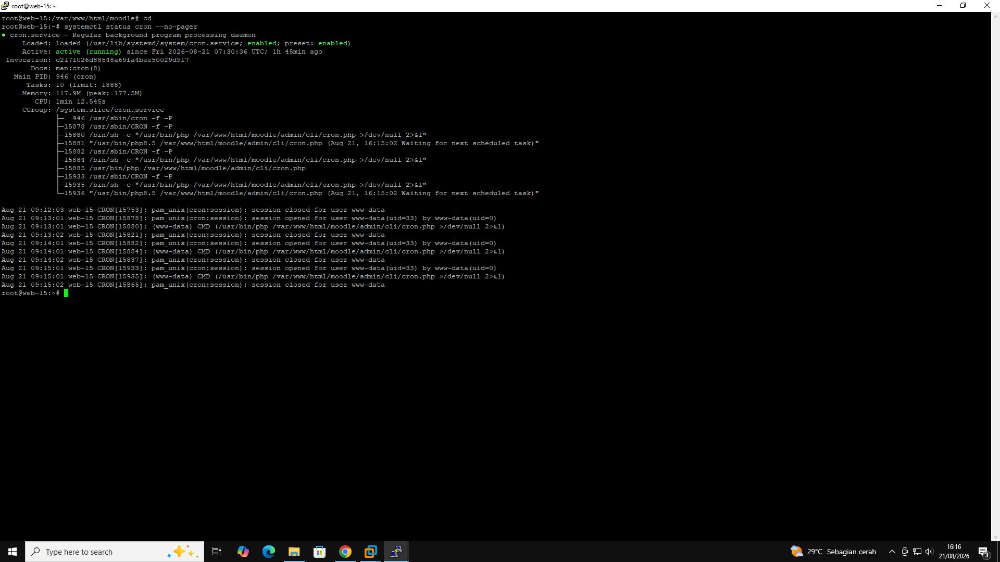
Moodledata Permission
Dokumentasi pengaturan permission direktori Moodledata.
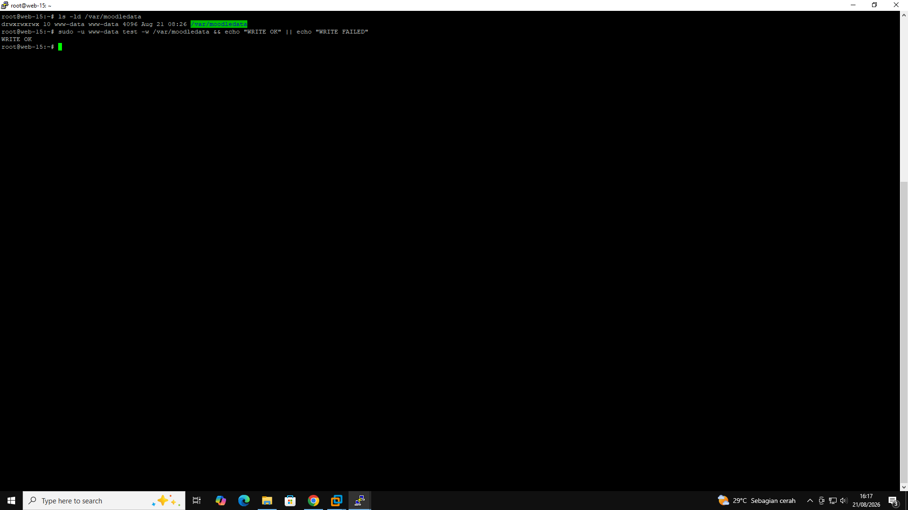
Moodle Environment Check
Pemeriksaan environment untuk memastikan kebutuhan Moodle dapat dipenuhi.
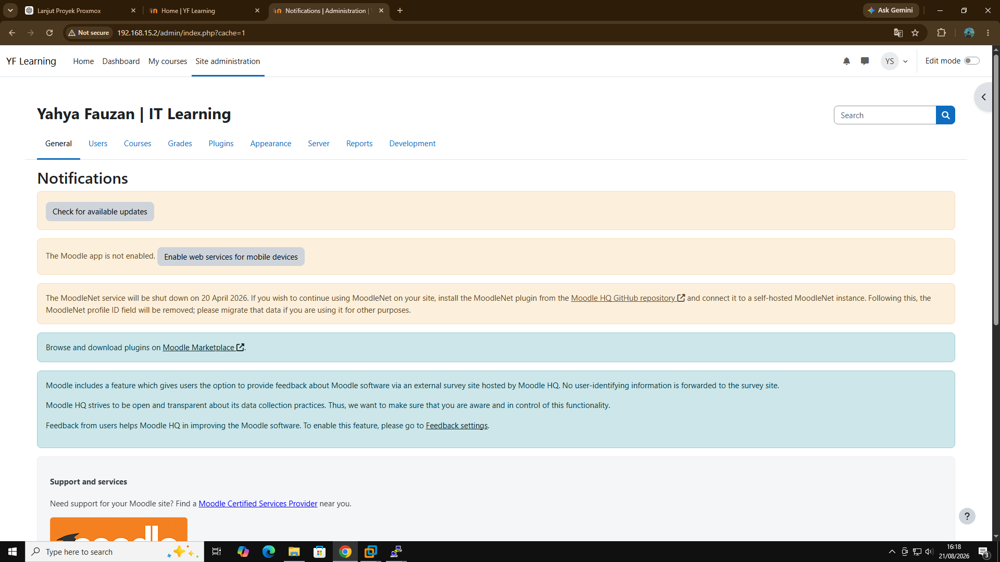
Moodle Dashboard
Tampilan dashboard Moodle setelah instalasi dan konfigurasi berhasil.
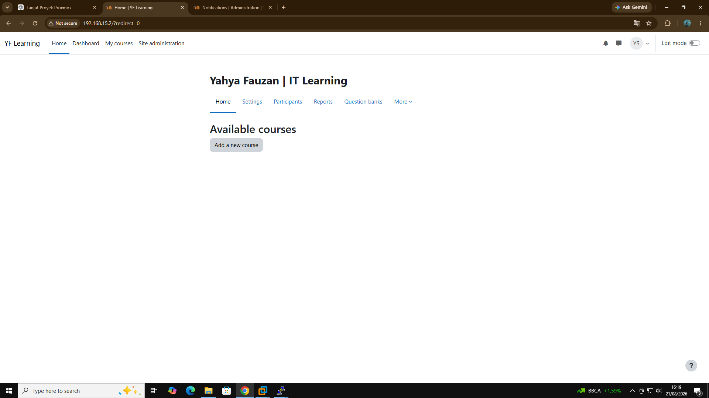
Moodle Site Administration
Dokumentasi pengelolaan administrasi situs Moodle.
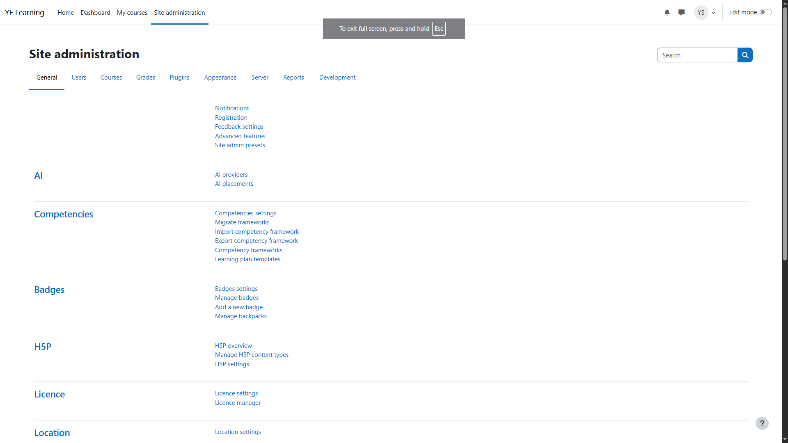
Moodle Course / Learning Page
Dokumentasi halaman course dan learning pada Moodle.
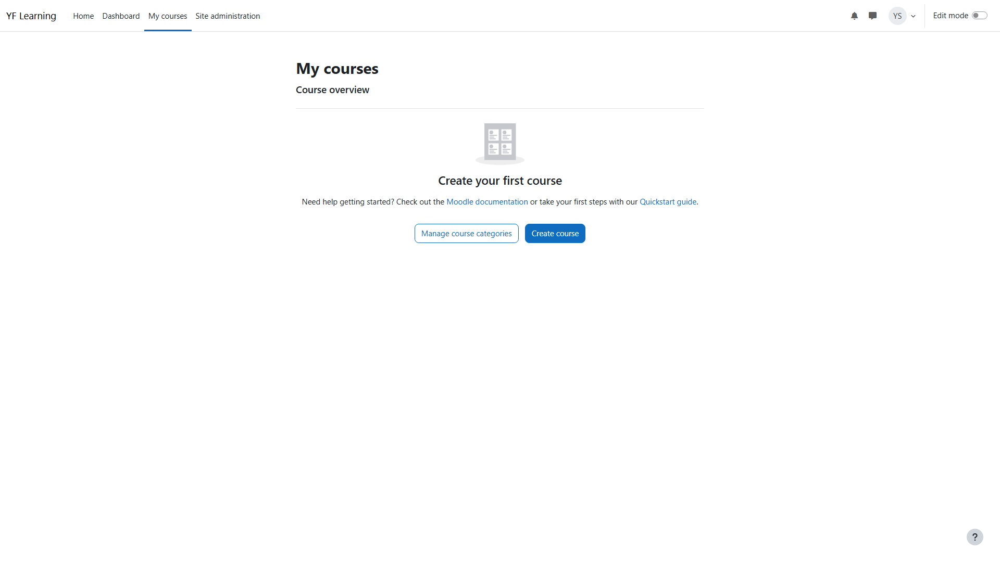
Moodle User Management
Dokumentasi pengelolaan user pada Moodle.
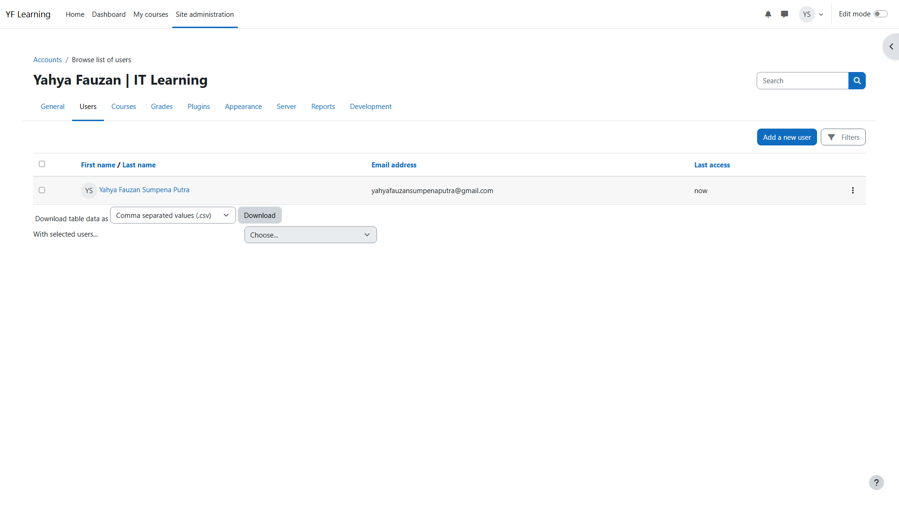
Moodle Final Working State
Kondisi akhir project setelah environment server, database, Moodle, konfigurasi, dan administrasi berhasil dijalankan.
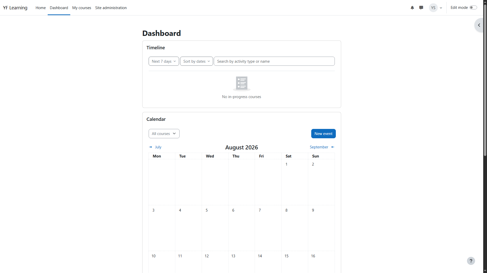
Relevant Competency
Sertifikat Kompetensi Teknik Komputer dan Jaringan
Kompetensi Keahlian:
Teknik Komputer dan Jaringan
Judul Penugasan:
Merancang Arsitektur, Layanan, Perangkat Lunak
dan Sarana pada Jaringan Private Cloud
Predikat:
Sangat Kompeten (Very Competent)
Masa berlaku:
3 tahun
Kompetensi ini relevan sebagai pendukung project virtualisasi server dan konsep private cloud yang diterapkan dalam Proxmox Server Lab.
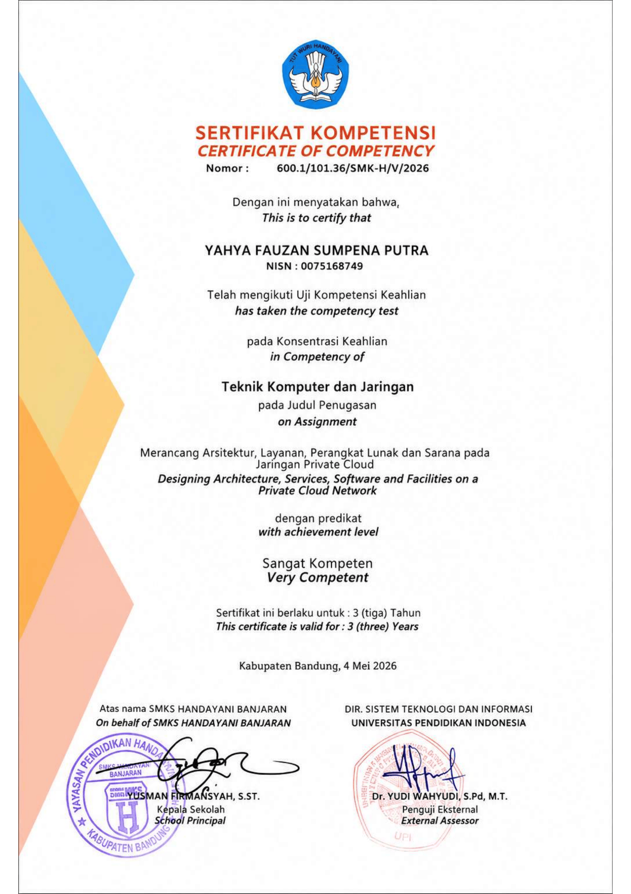
Skills Demonstrated
Virtualization
Penggunaan environment virtual server menggunakan Proxmox VE.
Linux Server
Konfigurasi dan pengelolaan server Linux untuk kebutuhan aplikasi.
Web & Database
Pengelolaan Web Server dan Database Server sebagai komponen aplikasi.
Moodle
Deployment dan konfigurasi Moodle hingga mencapai final working state.
Project Result
Proxmox Server Lab
Project mendokumentasikan pembangunan environment server virtual, konfigurasi Web Server dan Database Server, deployment Moodle, konfigurasi environment, Cron, permission, administrasi Moodle, hingga final working state.
← Kembali ke Portfolio